מתנה לעובדים שלא נשארת בארון.
הטבה שמרגישים כל יום, בבית ובמשרד: מסכים ניידים שמתחברים ללפטופ ומוסיפים לו עד שלושה מסכים. זה יכול להתאים גם לערכת הקליטה.
| מחלקה | חדשים | קיבלו | חסר |
|---|---|---|---|
| פיתוח | 6 | 5 | 1 |
| מכירות | 4 | 4 | 0 |
| תפעול | 3 | 2 | 1 |
| כספים | 1 | 1 | 0 |
| שירות | 2 | 2 | 0 |
לפטופ אחד, מסך אחד
גוללים, והמסכים נפתחים
זוכים לאמון מצד עובדים ב־
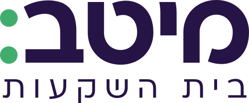
כמה מסכים במתנה?
ב-Dual P5 וב-Dual S1 אין תוכנה להתקין, אז המתנה עובדת מהרגע שמחברים. בהדגמה משווים לדגמים הגדולים.
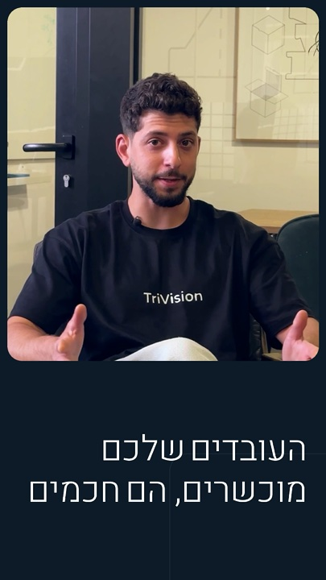
זום · צוות| מחלקה | חדשים | קיבלו | חסר |
|---|---|---|---|
| פיתוח | 6 | 5 | 1 |
| מכירות | 4 | 4 | 0 |
| תפעול | 3 | 2 | 1 |
| כספים | 1 | 1 | 0 |
| שירות | 2 | 2 | 0 |
יש עוד דגמים באתר של TriVision.
מסך נוסף אחד לצד הלפטופ, 14 או 15.6 אינץ'. מתאים לעבודה ממוקדת ולנסיעות.
שני מסכי צד, עד 15.6 אינץ'. ב-S2 Pro: מבנה אלומיניום וחיבור בכבל אחד.
שלושה מסכים נוספים, עד 15.6 אינץ', בחיבור של כבל אחד.
ככה זה נראה אצל העובדים.
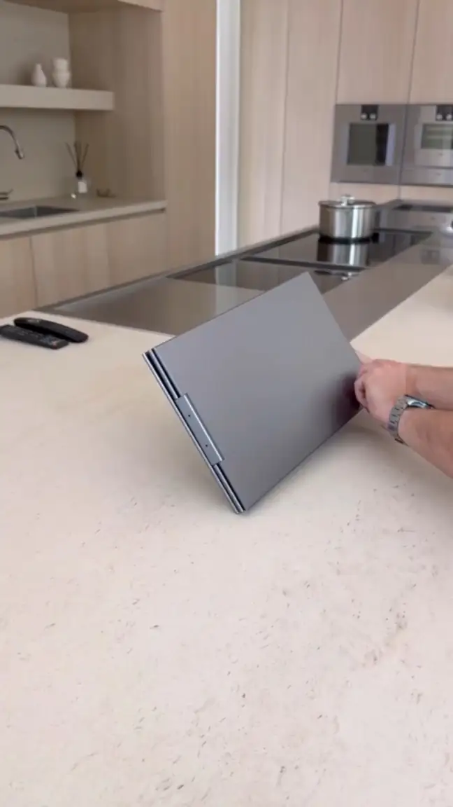
נפתח ביום הראשון, ונשאר על השולחן.
מסך דק ומקופל שנפתח ביד, בלי כלים.
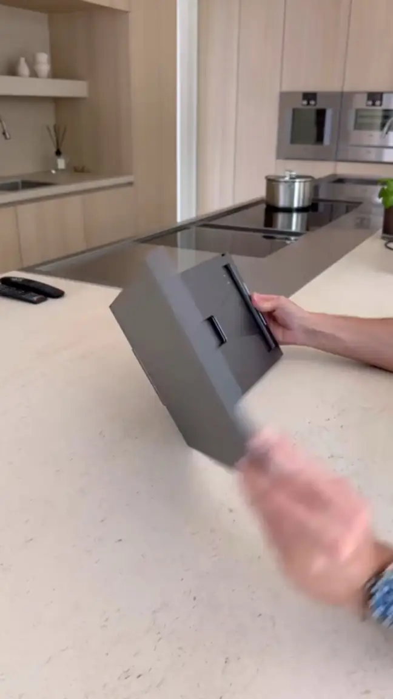
עומד לבד, גם על השיש במטבח.
רגלית מתקפלת מחזיקה את המסכים ליד הלפטופ, ביום מהבית וגם במשרד.
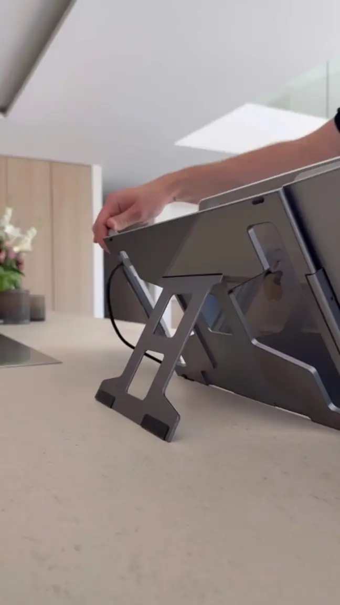
מתחברים ללפטופ שכבר יש לעובדים.
בדגמים S2 Pro, Pro Max ו-Quad S8 הכול עובר בכבל אחד.
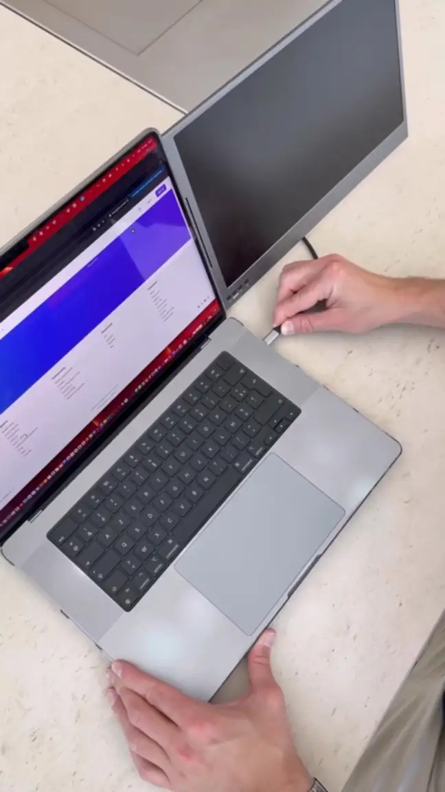
מסך למיילים, מסך לזום, ומסך לעבודה עצמה.
ככה נראית מתנה שעובדים איתה: שלושה מסכים בכל מקום שבו פותחים את הלפטופ.
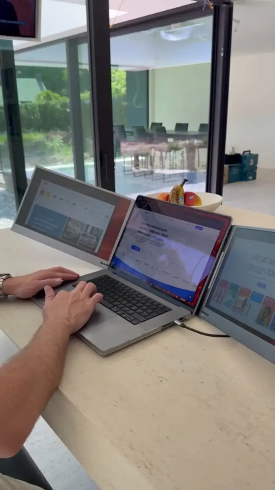
גוללים, והסרטון זז איתכם
העובדים מנסים.
אתם מחליטים.
נגיע עם כמה דגמים ונחבר אותם ללפטופים של העובדים. רואים את זה על המחשבים שלכם, לא בקטלוג.
נשאיר כמה מסכים לצוות אחד, ותראו בעצמכם אם הם על השולחן או כבר בארון.
נבנה הצעת מחיר לפי מספר העובדים והדגם שבחרתם. לערכת קליטה אפשר לצרף גם מקלדת, עכבר וסטנד.
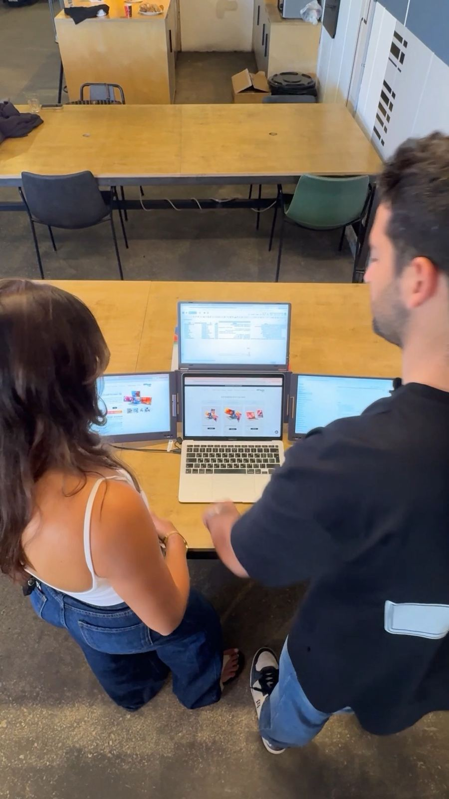
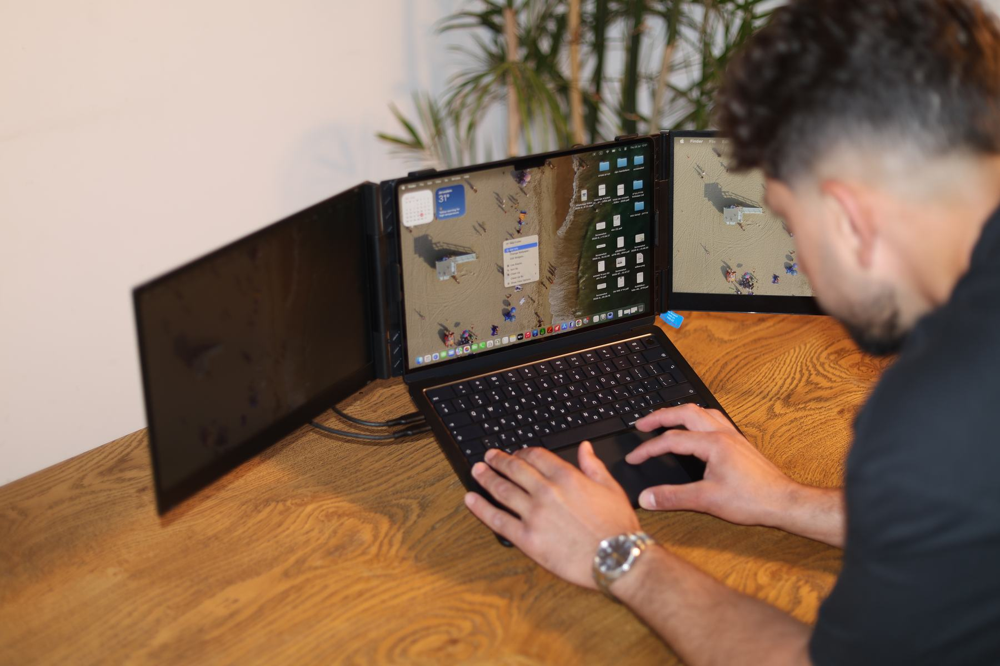
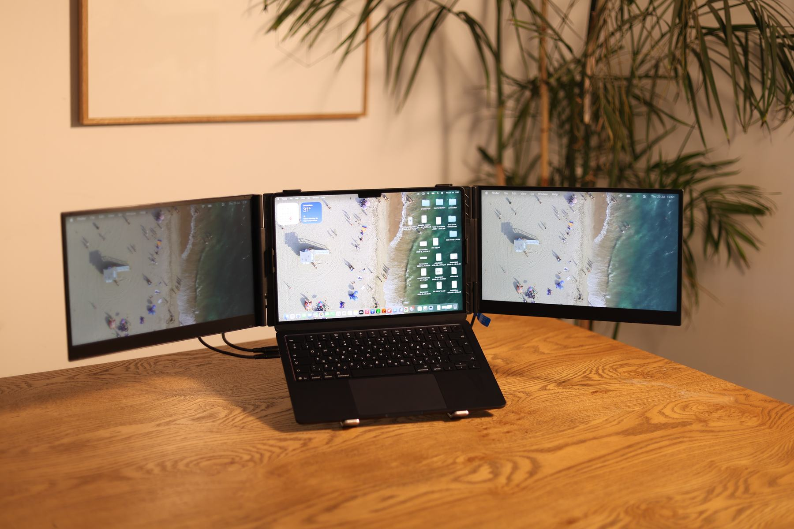
PwC הזמינו מאיתנו 100 יחידות למחלקה שעובדת בשטח.
ועובדים ב-Intel, HP, Amazon ומיטב כבר משתמשים במסכים האלה. אצלכם זה יכול להתחיל ממחלקה אחת, או ממחזור הקליטה הבא.
מתחמי עבודה גמישים
״המסכים הניידים של TriVision הפכו לכלי עבודה משמעותי עבור עובדים שעובדים בין משרדים, חדרי ישיבות ומתחמי עבודה גמישים. היכולת להקים סביבת עבודה מרובת מסכים בתוך דקות משפרת את הפרודוקטיביות, מקלה על שיתוף פעולה ומאפשרת חוויית עבודה רציפה מכל מקום.״
״רכשתי הרחבה של שני מסכים נוספים ללפטופ, מוצר מנצח, יותר ממה שציפיתי, חווית עבודה נוחה, כל המסכים באותו קו הטיה לפי הנוחות, הרכבה קלה, קל ונייד, והשירות אפילו עוד יותר מנצח…״
עופר פרץ, עו"ד״כל מי שרואה אותי עם מסכי העבודה החדשים עוצר ושואל. לא מבינה איך עבדתי לפני עם מסך אחד :) משפר ומייעל את יום העבודה ברמה מטורפת!״
Anat Claudia Ben Shaul״לקח לי 10 דקות בדיוק לחבר ולהגדיר את המסכים בהגדרות של הנייד - וזה פשוט עובד! שני מסכים נוספים, חדים וברורים - ופתאום העבודה נהייתה קלה ונוחה.״
Yotam Barneis״שירות מעולה, זמינות, שירותיות, מקצועיות ואפילו הגיע במהירות שיא. כל הכבוד על היעילות!״
Roee - Tevel Logistics, Ltd.״המוצר הגיע אליי מהר, התקנה פשוטה, ואני עובדת עם שלושת המסכים כבר חצי שנה באושר רב! לא יודעת איך עבדתי לפני כן.״
hagit oz״המוצר הזה הופך כל מחשב נייד לתחנת עבודה, דבר שלי אישית עוזר המון לכל אורך היום. העובדה שהמסכים האלו מתקפלים, וניתן לנייד אותם ממקום למקום, מקל מאוד על כל העבודה.״
בן בר-נוי פניקס
״חללית שמשנה חיים: חיברנו עוד 3 מסכים ללפטופ שלנו״
״מפלצת פרודוקטיביות ניידת: תחנת העבודה של TriVision שמשנה את חוקי המשחק״
״המותג הישראלי שהופך כל מחשב נייד לעמדת עבודה חכמה, ניידת ויעילה יותר״
נקבע הדגמה לעובדים.
השאירו פרטים ונתאם יום. נביא כמה דגמים למשרד, ותראו איך העובדים מגיבים.
40 שניות מאיתנו, לפני שנפגשים.